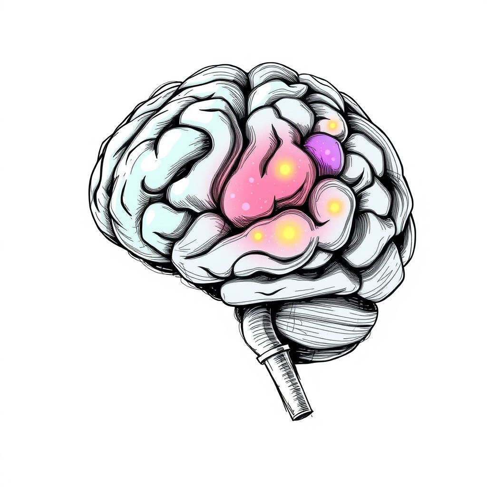

The Limits of High Functioning Autism
The “high functioning” label describes a range of expressions of Autism. Here are a few.
Ableism and ASD
Ableism is a form of discrimination against an individual's disability. It can be intentional or unintentional. It includes the words we use, the places we visit, and our behaviors.
Actively seeking to include autistic people in the classroom, club, or workspace is an antidote to ableism (McKeithan, 2025).
Another form of combatting ableism is to consistently choose evidence-based practices with socially valid goals. The National Clearinghouse's database for Autism EBPs is the place to check one.
Girls on the Spectrum
Current data suggests boys are four times more likely to have Autism than girls. However, this may be due to measurement bias, since boys are over-represented in the research literature. Some experts suggest the true ratio may be 2:1.
It is also typically more difficult for girls to receive an Autism diagnosis, because they may camouflage their symptoms more effectively than boys, or because they may receive an alternative diagnosis like anxiety.
Early recognition is important to address the likelihood of depression, anxiety, and eating disorders in the autistic population of women and girls (Aspy, 2019). Only the complete diagnostic picture can provide the necessary social and academic supports.
Executive Functioning
Executive functioning has been compared to an air traffic controller. It is the part of the brain that helps organize incoming inputs and outputs into a steady, harmonized system (CDCHU, 2014).
The three main components are working memory, inhibitory control, and cognitive flexibility. Each one can be trained by a specific set of interventions targeting memorization, delayed reinforcement, and transitioning.
Enhancing and practicing executive function skills in children and adolescents (PDF)
Theory of Mind
Theory of Mind is the “ability to recognize others' mental states and understand that they may be different from one's own” (Mann & McKeithan, 2025).
Experts believe Theory of Mind develops in the preschool years, as children learn to analyze facial expressions and other social cues automatically.
This process may occur at a different pace for individuals with ASD, but it would be inaccurate to assume it does not happen at all.
Mind Blindness
Mind blindness is a theory developed by Sir Simon Baron-Cohen in 1995. It states that individuals with autism do not have the neurobiology for Theory of Mind and are “blind” to the minds of others.
This theory is currently under scrutiny for lack of empirical evidence, and for better explanations such as the double empathy problem.
Social Thinking
Social thinking is also known as social cognition. It refers to the processing, storage, and application of information about other people and social situations (Mann & McKeithan, 2025).
Notice the link between social thinking and executive function. Both contain “memory” and “storage” as key parts of the definition.
This suggests that autistic neurobiology biases toward an alternative storage system for social information, one that may not be as readily or automatically accessible as it is for brains more closely aligned with the neuromajority average. The relevant question, then, is about determining the strength and advantage of those alternative storage locations.
Co-Occurring Conditions
Eighty percent of individuals with autism experience a co-occurring condition, meaning they might have a secondary or tertiary diagnosis. The most common conditions are depression, anxiety, and ADHD. Gastrointestinal disorders are also infamous co-occurrences (McKeithan, 2025).
Emotional Vulnerability
Emotional vulnerability is a term of art used to suggest that individuals with autism are uniquely exposed to emotional fluctuations and the biological consequences of those fluctuations. Social rejection, sensory differences, and communication differences increase the difficulty of expressing emotions to others and to oneself, which may lead to emotional dysregulation.
Recognizing this unique sensitivity to emotions is essential for educators and caretakers who want to practice and share EBPs with others (Aspy, 2019).
Sensory Differences
The autistic brain is diverse — hence the term neurodiverse. This diversity allows autistic people to experience the world in creative and sometimes unpredictable ways.
Sensory differences affect all eight senses: touch, smell, sight, sound, taste, interoception, exteroception, and proprioception. Individuals with Autism may also have high or low thresholds for sensory input, which shapes each individual's unique needs.
Giftedness

A gifted student is a student with exceptional academic abilities. They may get consistently good grades in one or many subjects. They may impress their teachers with their work. An autistic student who is also gifted is known as twice exceptional. Gifted IQs are typically in the 98th percentile.
Twice exceptional students may have atypical development, showing advanced academic skills and emerging social skills. They may also be perfectionists, and intensely excitable about special interests. This unique population still needs support to ensure their gifts can be shared.
Functional Academics
The term functional suggests a type of schooling that has an observable and socially valid function in a student's life.
While some students may intuit or develop these functional skills automatically, students with ASD need functional skills to be taught directly and explicitly. Functional skills include communication, daily living skills, and leisure activities — all activities that help one regulate and negotiate the environment.
Strengths-Based Approach
Individuals with Autism always have a unique strength — a skill or diverse autistic expression that creates a niche role for them.
Finding that niche and practicing the skills relevant to it is a strengths-based approach to Autism that can moderate the effects of ableism. Moving beyond the “high functioning” or “low functioning” label can improve self-esteem and encourage independence (McKeithan, 2025).
Meltdowns
A meltdown is an unintentional, brain-based reaction triggered by the persistent accumulation of stress. Meltdowns can take many forms: verbal or physical aggression, self-injury, destruction of property, or intense withdrawal.
Meltdowns can be broken down into three stages.
The first stage is rumbling. A skilled educator can identify the warning signs of a meltdown during rumbling.
The second stage is rage. At this point the meltdown is occurring. Nothing can be done. Let the meltdown run its course.
The final stage is recovery. An autistic person is still emotionally vulnerable at this stage, and recovery must be complete before any new learning starts (Smith-Myles & Aspy, 2024).
References
- Aspy, R. (2019). Autism spectrum disorder: Assessment and intervention across the lifespan. AAPC Publishing.
- Center on the Developing Child at Harvard University. (2014). Enhancing and practicing executive function skills with children from infancy to adolescence. Harvard University.
- Mann, C., & McKeithan, G. (2025). Social cognition and the education of learners on the autism spectrum. University of Kansas.
- McKeithan, G. (2025). SPED 860: Characteristics and methods for students with autism spectrum disorder [Course materials]. University of Kansas.
- Smith-Myles, B., & Aspy, R. (2024). High-functioning autism and difficult moments: Practical solutions for reducing meltdowns (Rev. ed.). Future Horizons.